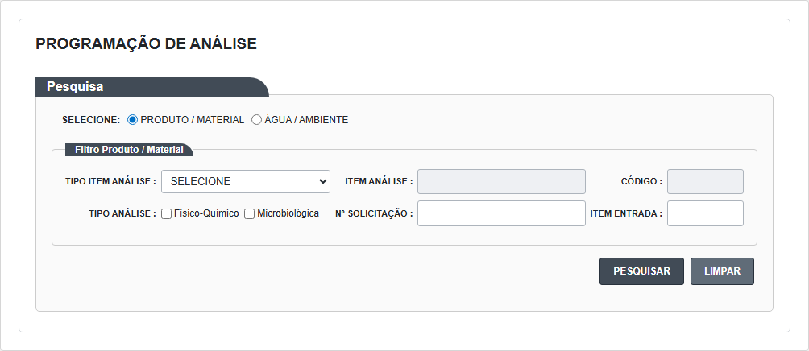
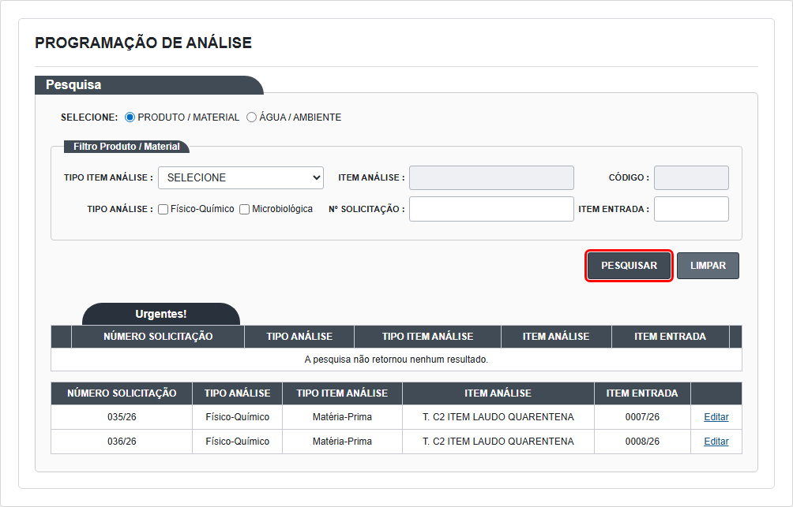
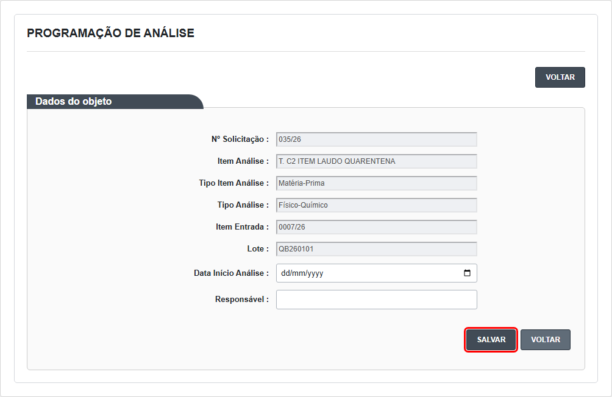
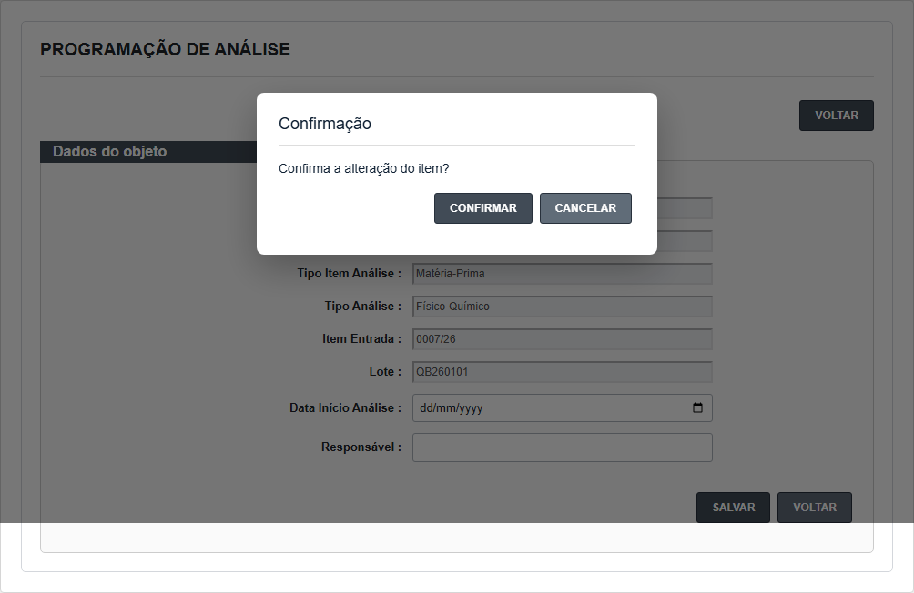
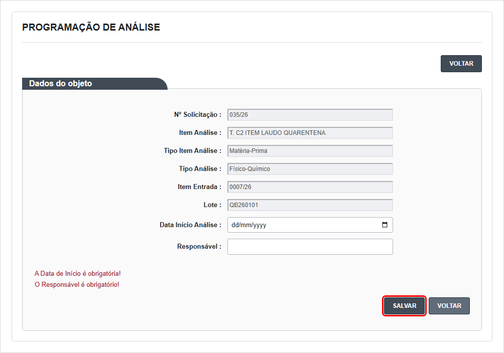
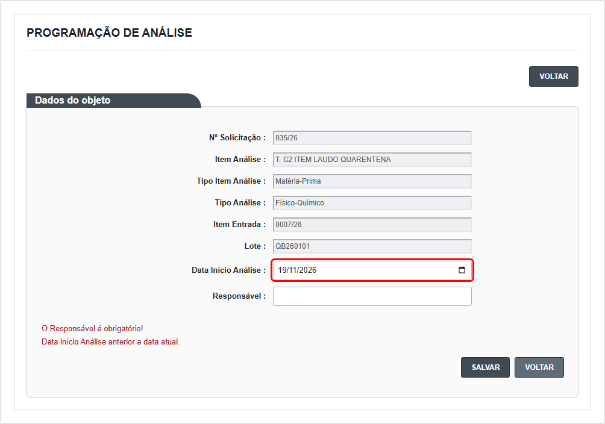
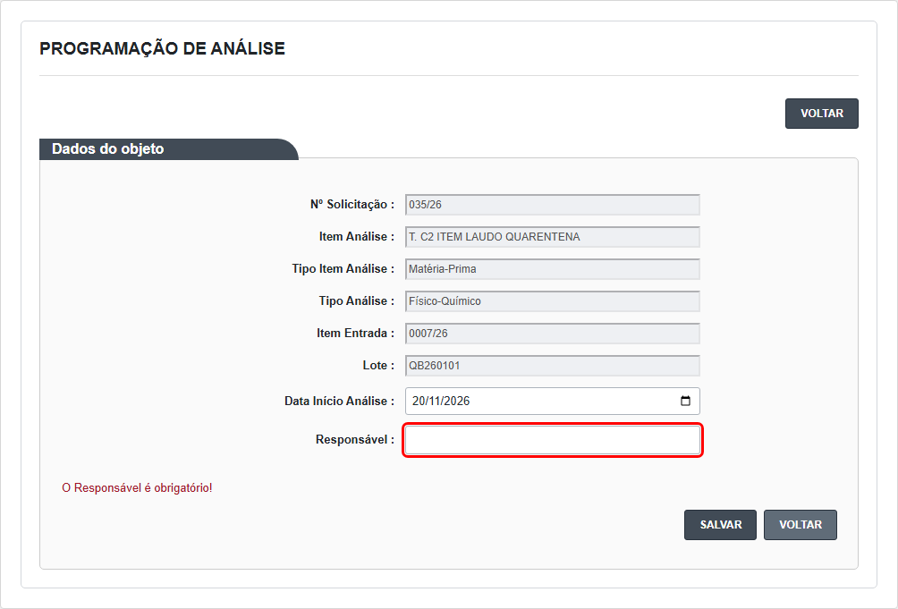
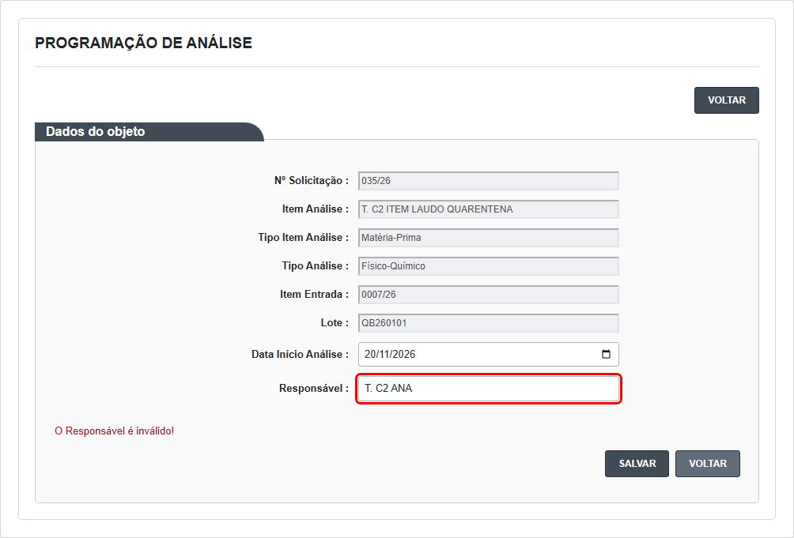
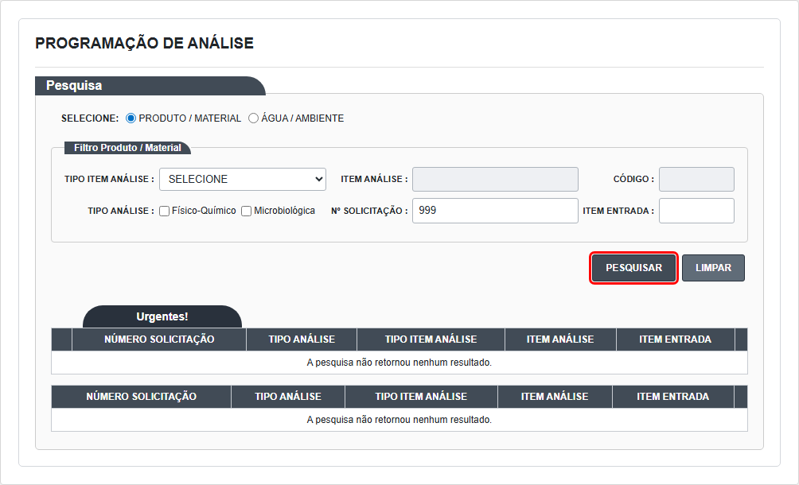

Passo a passo
- Abrir a tela. No menu Controle da Qualidade › Análise e Laudo, clique em Programação de Análise. A tela abre com o título PROGRAMAÇÃO DE ANÁLISE, o quadro "Pesquisa", as opções PRODUTO / MATERIAL (marcada) e ÁGUA / AMBIENTE, e o "Filtro Produto / Material": TIPO ITEM ANÁLISE (SELECIONE, Granel, Matéria-Prima, Material Embalagem, Produto Acabado, Semi-Elaborado), ITEM ANÁLISE, CÓDIGO, TIPO ANÁLISE (Físico-Químico e Microbiológica), Nº SOLICITAÇÃO e ITEM ENTRADA. Botões: PESQUISAR e LIMPAR.

A imagem mostra o título, as duas opções de trabalho, os filtros e os botões PESQUISAR e LIMPAR, sem nenhuma lista.
- Pesquisar. Clique em PESQUISAR. Aparecem duas grades: Urgentes! (aqui vazia, com "A pesquisa não retornou nenhum resultado.") e a lista normal, com NÚMERO SOLICITAÇÃO, TIPO ANÁLISE, TIPO ITEM ANÁLISE, ITEM ANÁLISE e ITEM ENTRADA. A solicitação só aparece depois que a amostragem foi executada; antes disso, a lista veio vazia. No fim de cada linha da lista normal há o texto Editar (não é um lápis).

A imagem mostra a grade Urgentes! vazia e a grade normal com as solicitações 035/26 e 036/26 (item T. C2 ITEM LAUDO QUARENTENA, Físico-Químico, Matéria-Prima, Itens de Entrada 0007/26 e 0008/26), cada uma com o texto Editar.
- Abrir a programação. Clique em Editar na linha. A tela continua com o título PROGRAMAÇÃO DE ANÁLISE e mostra o quadro "Dados do objeto": Nº Solicitação, Item Análise, Tipo Item Análise, Tipo Análise, Item Entrada e Lote, todos só para leitura, mais a Data Início Análise (abre vazia, formato dd/mm/aaaa, com calendário) e o Responsável. Botões: SALVAR e VOLTAR (no alto e embaixo).

A imagem mostra os dados da solicitação 035/26 (lote QB260101), a Data Início Análise vazia, o Responsável vazio e o botão SALVAR marcado.
- Salvar e confirmar. Clique em SALVAR. Abre a caixa "Confirmação" com a pergunta "Confirma a alteração do item?" e os botões CONFIRMAR e CANCELAR. A pergunta vem antes das mensagens de erro, mesmo com o formulário vazio.

A imagem mostra a caixa de confirmação por cima do formulário vazio, com CONFIRMAR e CANCELAR.
- Ver as recusas. Depois de CONFIRMAR, as mensagens aparecem em vermelho, abaixo dos campos: - Sem data e sem responsável: "A Data de Início é obrigatória!" e "O Responsável é obrigatório!" (as duas juntas).

A imagem mostra as duas mensagens e o botão SALVAR marcado.
- Data de ontem (19/11/2026): "Data início Análise anterior a data atual." (junto com "O Responsável é obrigatório!").

A imagem mostra a data 19/11/2026 marcada e as duas mensagens.
- Data de hoje e Responsável vazio: "O Responsável é obrigatório!".

A imagem mostra a data de hoje, o Responsável vazio (marcado) e a mensagem.
- Escolher o Responsável (bloqueado no teste). Digite parte do nome no campo Responsável e escolha na lista de sugestões. Na versão nova de teste nenhuma sugestão aparece, para nenhum termo (DV-CQ-N-060).
A imagem mostra o texto "T. C2 ANA" digitado no Responsável (marcado) e nenhuma sugestão aberta.
Com texto digitado e não escolhido na lista, SALVAR e CONFIRMAR respondem "O Responsável é inválido!".

A imagem mostra "T. C2 ANA" no campo e a mensagem "O Responsável é inválido!".
-
Gravar (não foi possível). Com o Responsável escolhido e a data de hoje ou futura, SALVAR e CONFIRMAR deveriam mostrar "Alteração efetuada com sucesso.", voltar à lista e passar a solicitação para "Em análise", com a análise em "Pendente de digitação" (do legado; a confirmar na versão nova). Não foi possível testar, porque ninguém pode ser escolhido como Responsável.
-
Lista sem resultado. Pesquise com um Nº Solicitação inexistente (por exemplo, 999): as duas grades mostram "A pesquisa não retornou nenhum resultado.". LIMPAR esvazia os filtros e esconde as grades.

A imagem mostra o Nº Solicitação 999, o botão PESQUISAR marcado e as duas grades vazias.
- Água / Ambiente. A opção abre e PESQUISAR não devolve linhas, porque não há solicitação de água ou ambiente na massa de teste (sem imagem).